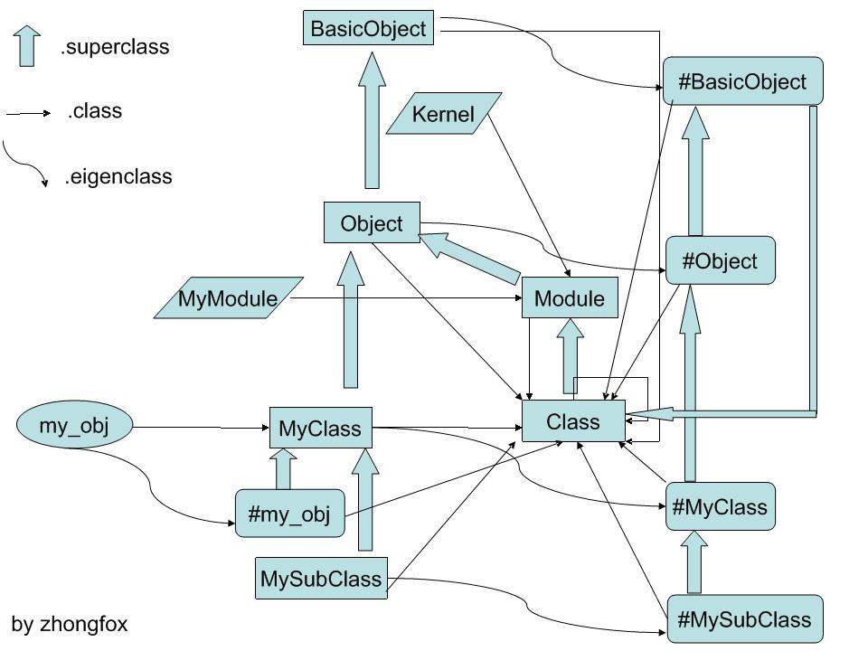

1. 设计理念
让程序编写变得快乐。
2. 基本语法
2.1. 条件，循环，异常
# if else x = 10 if x > 9 puts "x > 9" elsif x < 8 puts "x < 8" else puts "x = 8 OR x = 9" end # loop 10.times do |index| puts "#{index}" end # exception begin raise "Error" rescue => e puts "Error #{e}" end
2.2. 函数，块，类，对象
def func(a, b) a + b end # lambda func f = ->(a, b) { a + b } f.call(1, 2) f2 = lambda do |a, b| a + b end f2.call(2, 3) class Hello private def _func1() end public def func2() end end obj = Hello.new obj.func
2.3. 模块，混入，继承
module HelloModule def test end end class HelloClass end class HelloClass2 < HelloClass2 include HelloModule end obj = HelloClass2.new obj.test
3. 一个实例
3.1. 读入命令行参数并操作文件
filename = ARGV[0] File.read(filename).each_line do |line| puts "#{line}" end
4. 常用 Gem
4.1. gem
包管理工具
gem list .*active.* 列出所有含有 active 的包
gem info activerecord 显示包 activerecord 的详细信息
4.2. bundler
包依赖管理工具，维护一个 Gemfile 文件。
bundle install 安装 Gemfile 中指定的 Gem
4.3. pry
ruby 程序调试工具。
4.4. rubocop
ruby 代码静态检查工具。
4.5. rake
ruby 构建工具，使用 Rakefile, 类似于 Makefile
5. 程序原理
5.1. 类对象关系图

5.2. 程序启动原理
见 Ruby 源代码。